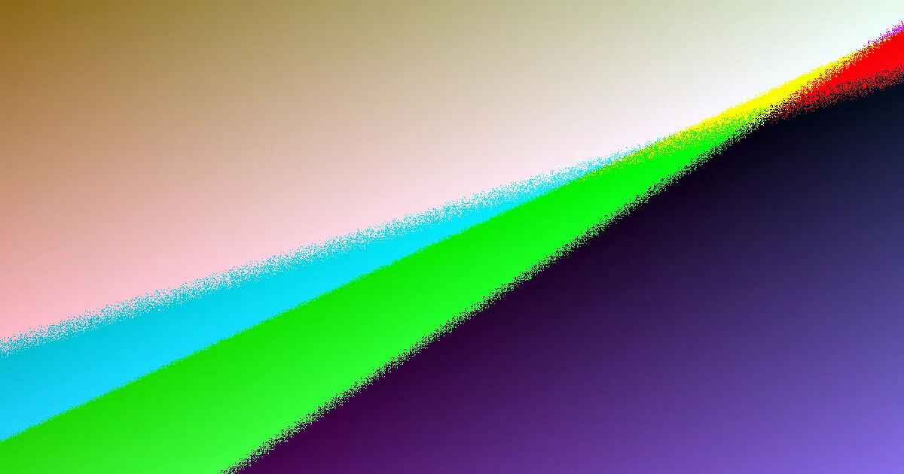

For local buyers, web design adelaide beginner guide understanding the practicalities of engaging a local provider.
Web Design Adelaide Beginner Guide Explained
When comparing web design services in Adelaide, it's crucial to look beyond the surface. The scope of work can vary significantly, from custom projects and small business websites to complete redesigns and ongoing maintenance. A first website for a local service business has different requirements than a rebuild aimed at preserving existing search rankings or an e-commerce store needing a streamlined path to purchase. Therefore, the initial written scope is a vital tool for decision-making. It should clearly outline planning, build stages, launch tasks, and any required input from your side. Confirm that planning, design, build, and launch are all included, along with mobile optimisation and basic on-page SEO setup. Clarify whether content structure, stock imagery, or training sessions are part of the package or separate items.
Choosing the Right Platform
The choice of platform should align with your day-to-day operational needs. Some platforms are designed for ease of updating without requiring a developer, allowing your team to manage content efficiently. For e-commerce sites, the focus shifts to fast loading speeds, building customer trust, and converting browsers into buyers. Custom builds cater to businesses with specific goals and customer demographics, offering a more tailored solution. When evaluating proposals, consider who will be updating the site after launch. If your team plans regular content edits, test the platform's user-friendliness. If lead generation is the primary objective, the structure and enquiry flow might be more critical than the visual design alone. For existing sites with established search visibility, a redesign brief must detail how the transition will occur without compromising current rankings. It's also important to confirm that clean structure, robust mobile performance, and search-ready foundations are integral to the build from the outset, and understand how these will be reflected in the final product and handover documentation.
Using Cost and Timing as Filters
While pricing can be broad, it serves as an effective initial filter for proposals. A basic brochure-style website for a small business typically starts in the low thousands. More complex projects, such as custom builds or sites with booking or e-commerce functionality, will incur higher costs. Remember that hosting and domain renewal are separate ongoing expenses, so an itemised proposal is more informative than a single figure. Similarly, consider the timeline. Most small business websites are completed within 3 to 8 weeks from the initial brief to launch, depending on the project's scope and the speed of content provision. Simple one-page sites can be launched faster, while larger custom builds naturally take longer. If your launch is tied to a specific campaign, new service, or business change, clarify your responsibilities and deadlines for supplying content, feedback, and approvals to ensure the project stays on track. Agreeing on milestones early and separating launch-critical elements from potential future enhancements can prevent delays.
Ownership, Access, and Support
Understanding website ownership is a key aspect. Once the build is fully paid, the finished website and all its content become your property, offering flexibility for future hosting changes or in-house updates. It is advisable to confirm the practical handover process, which should include a clear list of access credentials you will receive at launch. This typically encompasses website login details, domain access, hosting information, and details of any third-party services integrated for forms or tracking. The service offering may also include ongoing maintenance plans covering updates, backups, security, and support. Decide whether you require continuous assistance post-launch or primarily a clean handover with occasional support. This decision point can significantly influence your choice of provider and the overall project cost.
- Define Your Goal. Determine if you need a first website, a redesign, a landing page, or a more complex build before comparing prices.
- Request Written Scope. Ask for inclusions, exclusions, pricing, and next steps in writing to ensure fair comparison of quotes.
- Match Platform to Use. Choose a build based on who will update the site after launch, not solely on visual style.
- Set Timeline Inputs. Agree on milestones early and confirm what content, feedback, and approvals are required from your side to keep the launch on schedule.
- Confirm Ownership and Handover. Verify what access credentials you will receive at launch and understand the terms of website ownership.
| Project Type | Key Focus | Typical Timeline | Estimated Cost | Post-Launch Needs |
|---|---|---|---|---|
| Simple Brochure Site | Basic information, contact details | 3-5 weeks | Low thousands | Occasional updates |
| Small Business Website | Lead generation, service information | 4-8 weeks | Mid thousands | Content updates, SEO monitoring |
| E-commerce Store | Product sales, secure transactions | 6-12 weeks | Higher thousands to tens of thousands | Inventory management, marketing, security |
| Website Redesign | Modernisation, improved UX, SEO retention | 4-10 weeks | Varies based on complexity | Ongoing maintenance, performance checks |
This guide is for Adelaide businesses comparing web design services, focusing on practical considerations for choosing a provider.